What Ronki looks like with a Pokémon heart. The kid still does the real thing in real life. What changes: each habit they are building shows up as a creature that comes closer to Ronki's fire, joins the team, grows up, and one day moves out into the world because it isn't needed anymore.
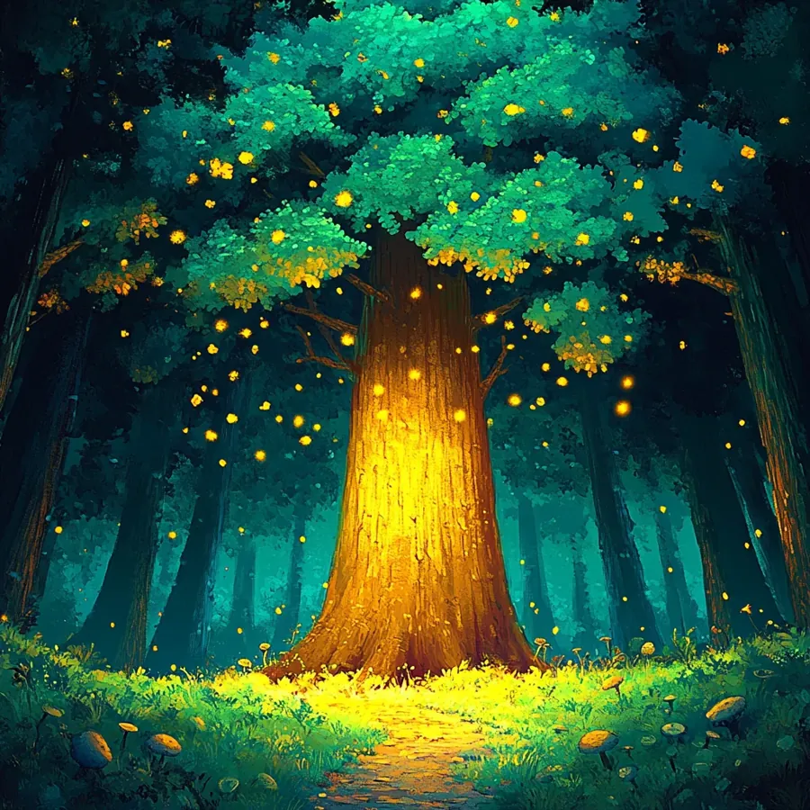
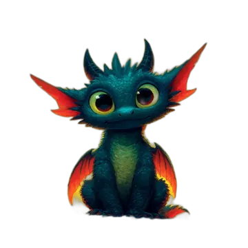
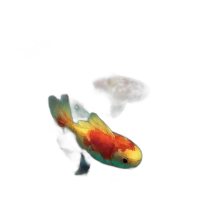
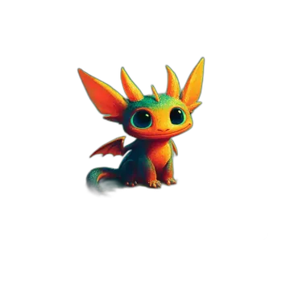
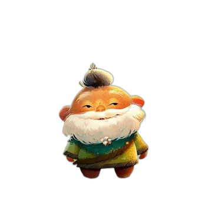
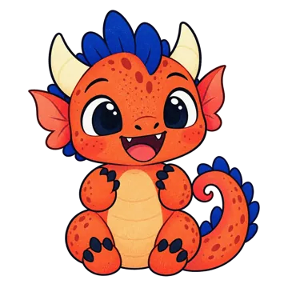
Two friends at the fire, two shadows at the edgeNo throwing, no luck. A creature's shadow waits at the edge of the Nest. Each time the kid does the matching real thing, it comes one step closer. After a handful of times it sits at the fire and joins the team.
The creature changes shape when the habit changes shape. It grows up when a parent says "macht das jetzt allein". Counts alone never evolve anything, so tapping doesn't cheat it.
Final form: the creature moves out into the world map. The slot frees up for the next habit. The book of moved-out creatures becomes a record of growing up: "Mit 6: Zähne allein."
We keep the feelings Pokémon is great at (discovery, a team you care about, a creature that grows with you) and swap every mechanic that pays for attention with one that pays for real life.
Sketched with existing Ronki art. In the real thing, each creature gets its own three-look line drawn in the Bilderbuch style.
Kid and parent pick "Zähne putzen" from the book. Ronki: "Da hinten guckt jemand."
Starts when the family picks itFive real brushings, one paw step each. Then the hold-still moment and it joins the team.
5 times done (age 4 to 7)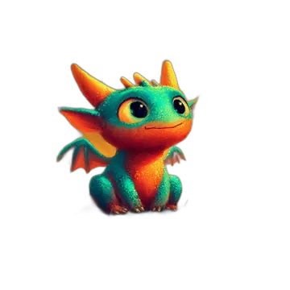
The parent area asks once a week: "Putzt Louis inzwischen allein?" A yes changes its shape.
Parent says: allein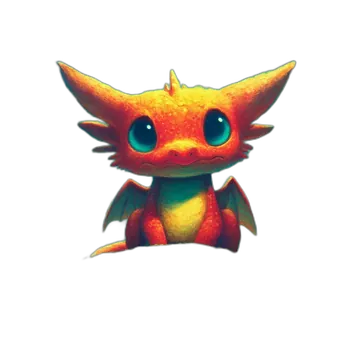
After about eight more weeks of "allein" it flies to the world map. Ronki stops asking about teeth.
~8 weeks alone, then the task leaves the NestWhy eight weeks: the best-known study on habit forming (Lally and colleagues, 2010) found a median of 66 days until a behaviour runs on autopilot, with a wide range of 18 to 254. So stage 3 should be a parent-adjustable default, not a promise. The important part is step 4: the task leaves the Nest. That is the fade built into the loop.
The Finch pass left one Nest screen and a Ronki passport. This lives inside both.
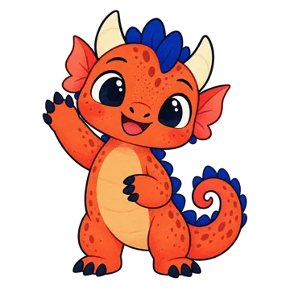
Nest. The shadow sits beside the fire. Paw steps show how close it is. Same task card as today.
Halt deinen Finger ganz still. Es will schnuppern.
The befriend moment. A calm hold, like the first fire breath in onboarding. No failure state, no timer.
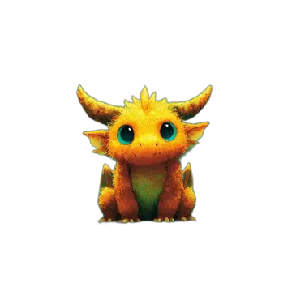
Schuhe binden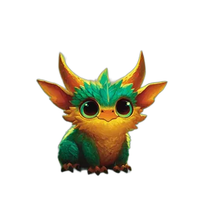
Allein lesen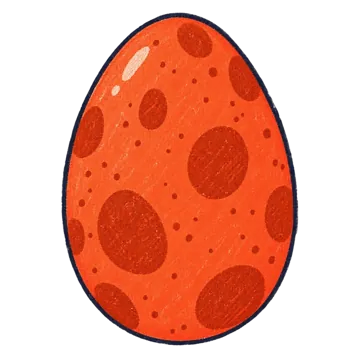
Ei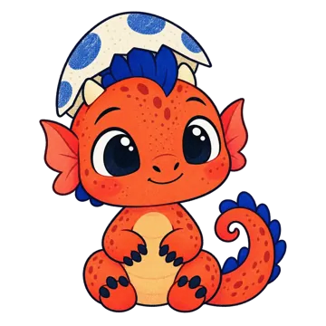
Baby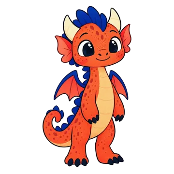
JungtierRonki passport, lower half. Team with growth pips, the moved-out wall with ages, silhouettes to pick from.
Pokémon needs conflict. Ronki's conflict is inside the kid's day, so the "wild" creatures are the things that make routines hard. There is no fight and no losing. Each calm evening makes the creature a little softer.
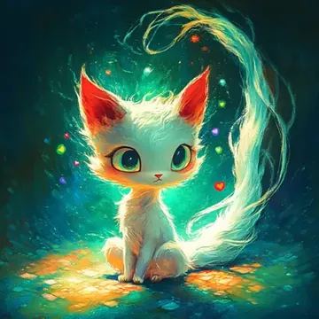
Shows up when a screen is on too long. Gets sleepy when the kid switches off on their own.
Calmed by: screen off without a fight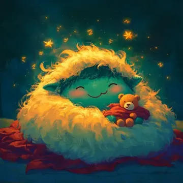
Pulls the blanket back over your head. Turns into a morning buddy when getting up gets easier.
Calmed by: up on the first call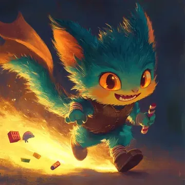
Hides one sock every morning. Becomes the tidy-up helper once the school bag is packed the night before.
Calmed by: bag packed in the eveningThe befriend, grow, let go loop holds from kindergarten to teens. The voice, the art and who picks the habits change.
Honest read: a 13-year-old will not use a baby-dragon app. This band needs its own look (sketchbook, line art). Same engine, different skin. Treat it as phase 3 or not at all.
Pokémon is built to keep you playing. Ronki is built to be needed less. Every borrowed mechanic has to pass that test.
The real risk: when kids start doing a thing for the reward, the reward can crowd out their own reasons (researchers call it the overjustification effect). Two things keep it in check here. The creature mirrors what the kid did instead of paying for it: there is no currency to spend. And the reward leaves on its own once the habit is automatic, which is the moment it would start to do harm.
The Finch pass cut features on purpose. This concept only works if it replaces pieces instead of stacking on them. It does: the treasure shelf becomes the team, the creature book becomes the Wesenbuch, and three orphaned systems get a job.
src/data/creatures.tsart existssrc/data/freunde.ts1 of 7 builtpublic/art/boss-*.webpart existssrc/loop/growth.tslivefeatures.ts (switched off)parked// one habit = one creature
type Wesen = {
id: 'glutfunke';
habitTaskId: 'zaehne_abends'; // links to a routine task
lifeArea: 'koerper';
stage: 'shadow' | 'friend' | 'grown' | 'movedOut';
steps: number; // real completions since picked
befriendAt: number; // 5 / 8 / 10 by age band
allowedAloneSince?: string; // parent said "allein"
movedOutAt?: string; // ISO date, shown as age
};
// rules (pure, in src/loop/)
// shadow -> friend : steps >= befriendAt
// friend -> grown : parent confirms "allein"
// grown -> movedOut: 8 weeks after allein (parent can change)
// and the task leaves the Nest routine